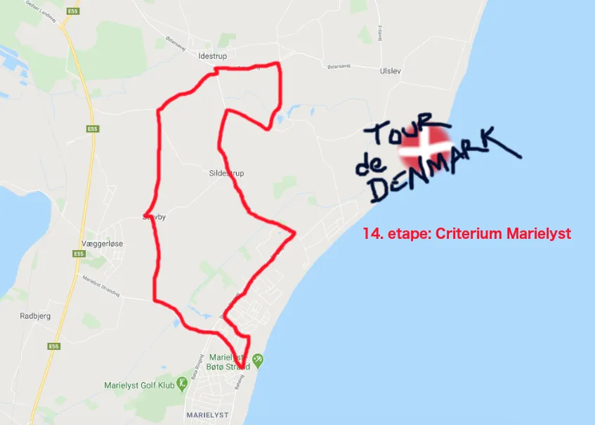

14. etape: Criterium Marielyst

Dagens etape var et 148 km criterium på Sydhavsøverne, nærmere bestemt Falster, hvor Torvet i Marielyst var målby for 10 runder á 14,8 km. Det blev igen en højdramatisk etape, hvor en Team Brooklyn rytter udviste vilje, determination og lyst til at lave ravage i klassementet.


Fra hviledagsklassement til det rigtige klassement
Det blev igen en dag, hvor UCI-kommissærerne kom på arbejde inden feltet blev sendt afsted. Ved indskrivningen stod nemlig Brooklyn-rytteren Jesper ”de Vlaeminck” Viktor Larsen og bad om startnummer. Jesper havde indtil dagens etape, sammen med hovedparten af de øvrige Brooklynryttere, drevet den af i hviledagsklassementet, hvor han ligger nummer to efter Peugeot Re-cycled`s Pelle Clemmensen.
Men på opfordring fra Molteni-holdets Jens Langergaard ville Jesper i dag springe en hviledag over og køre med i det rigtige klassement, nu hvor dagens etape af Tour de Danmark var henlagt til Jespers baghave på Falster.
Efter en grundig udspørgen til Jespers whereabouts de seneste 13 dage, blev UCI-kommissærerne forvisset om, at Jesper faktisk havde hvilet sig intenst og han fik starttilladelse og et nummer på ryggen.
”Sidst jeg var på cyklen er 14 dage siden, og jeg må sige at bare de 3-4 km fra min bolig til Marielyst Torv gav lidt stramme lægge,” siger Jesper Viktor Larsen.
Blodpose hos halvfætter til Dr. Ferrari
Efter nummeret kom på ryggen nåede Jesper ”de Vlaeminck” Viktor Larsen da også ledsaget af Moltenis Jens Langergaard forbi Dr. Emils Laboratorium få hundrede meter fra startstregen. Dr. Emil er halvfætter til den mere berømte Dr. Ferrari i Lucca og er Jespers personlige træner.
”Jeg ringede for en sikkerheds skyld i aftes og bad Dr. Emil om at stille et par blodposer til optøning. Desværre kunne han ikke tilbyde min ven og konkurrent Jens Langergaard assistance, da han var løbet tør for blodposer med Jens`s blodtype. Så alene af den grund ser jeg en mulighed for at lave ravage på dagens etape,” lød det fra Jesper inden starten gik.
Criteriumsrundstrækning bragte rytterne forbi de små landsbyer på Falster: Stovby, Tjæreby, Idestrup, Elkenør og Sildestrup – inden de igen ramte Marielyst Torv. Feltet blev sendt ud på første omgang af den 14,8 km forholdsvis flade, men tekniske strækning i solskin. Men vinden var til gengæld en modstander, med en rute der snart gik den ene vej, snart den anden ville der blive sidevindsstykker og modvindsstykker.
Odds 1,08 på totalisatoren i Jacks Kiosk
Feltet forblev samlet de første fire omgange, hvor der også kom lidt belgiervejr i form af byger ned over rytterne, og da lokalpublikummet kunne se at Jesper Viktor hang fint på, blev han spillet helt i bund på totalisatoren i Jacks Kiosk. Da feltet passerede stregen ved Marielyst for fjerde gang, var Jesper spillet helt ned i odds 1,08 da feltet kørte ud på 5. omgang.
Opbakningen fra publikum gav Jesper Viktor Larsen mod og kampgejst og da feltet kom ud af Stovby lagde han sig i front af feltet og nappede suverænt skiltespurten i Tjæreby.

Molteni-holdet blev lidt urolig for om skiltespurten var et afsæt til et decideret udbrud og satte Langergaard op foran for at lukke det hul på 100 meter som Jesper Viktor havde skabt.
”Da jeg kommer op til ham, laver han et taktisk Kermesse-løbs-trick. Han accelererer igen, jeg sætter efter og pludselig har han fået en med i udbruddet i stedet for at riste i side- og modvind alene med et jagtende felt bag sig,” siger Jens Langergaard.
Spurtopgør mellem Moltenis Langegaard og Brooklyns Jesper Viktor
Da duoen passerer Marielyst Torv og går ud på 6. omgang har de skabt et forspring på 30 sekunder til feltet og det udbygges over de næste omgange. En spurt mellem de to skal afgøre hvem, der vinder dagens etape og her lader Jesper Viktor sig overliste af en variant af hans eget Kermesse-trick.
500 meter før mål stikker Langergaard for at signalere en lang spurt, Jesper Viktor går naturligvis efter og ved 300 meter mærket er har Jesper lukket hullet.
”Det gik lige efter planen. Da Jesper er oppe kører han forbi mig og så ligger jeg mig lynhurtigt ind på hjulet og så bliver jer der indtil 50 meter mærket, trækker ud af den læ han han har skabt for mig og vinder med en cykellængde. Men hatten af for Jesper. Flot og stærkt kørt,” siger Langergaard.
Justering af hviledagsklassementet
Efter podieceremonien havde UCI-kommissærerne også en justering af hviledagsklassementet. Til Jespers overraskelse tæller pointene, han tog i dagens skiltespurter, faktisk med i hviledagsklassementet fremgår det af UCI-rulebook § 109 stk 6 litra E og derfor går Jesper Viktor op på 1. pladsen i hviledagsklassementet.
”Jeg er godt tilfreds. En 2. plads på etapen, hvor min indsats samtidig bringer mig i i front i hviledagsklassementet er en fin position at vende tilbage til hængekøjen på verandaen på,” siger Jesper Viktor Larsen.
Forza Jens Langergaard
Forza Jesper ”de Vlaeminck” Viktor Larsen
Forza Molteni
Forza Brooklyn
14. etape: Criterium Marielyst
1. Jens Langergaard, Squadra Molteni
2. Jesper ”de Vlaeminck” Viktor Larsen, Brooklyn
Klassement:
1. Jens Langergaard, Squadra Molteni
2. Svend Seegert, Squadra Molteni
3. Kristian Blume, Squadra Molteni
4. Niels Bjørnsteen, Squadra Molteni
5. Jeppe Thiemer, Squadra Molteni
6. Grane Wunderbein Maaløe, Squadra Molteni
7. Jens Stærk Bojesen, Squadra Molteni
8. Lars Munch Larsen, Squadra Molteni
9. Per Sandahl, Squadra Molteni
DQ Morten Mejsen, Peugeot Re-Cycled
Hviledags-klassement:
1.Jesper ”de Vlaeminck” Viktor Larsen, Brooklyn
2. Pelle Clemmesen, Peugeot Re-Cycled
Hold:
1. Squadra Molteni
2. Peugeot Re-Cycled